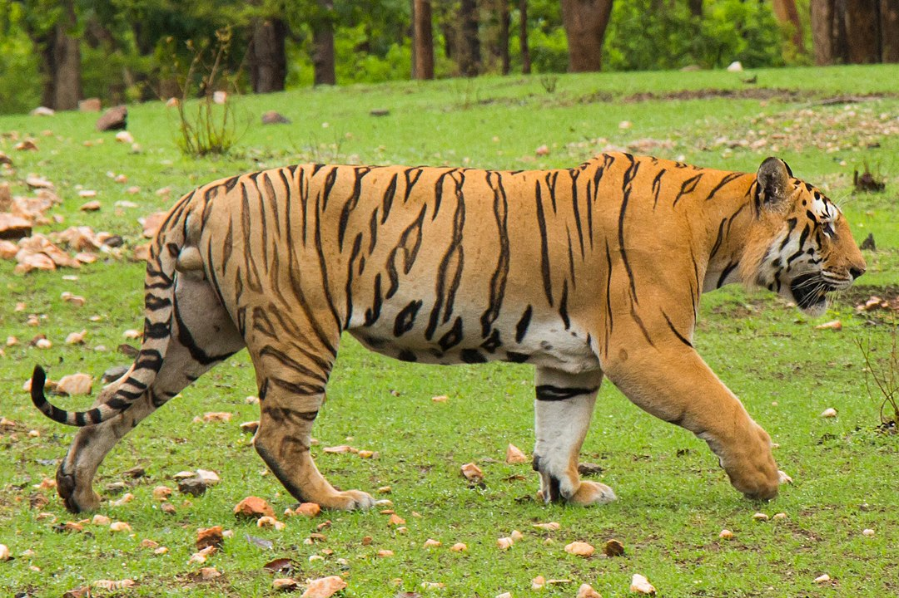
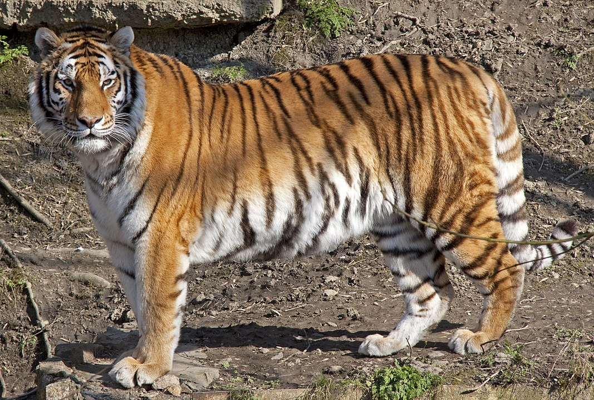
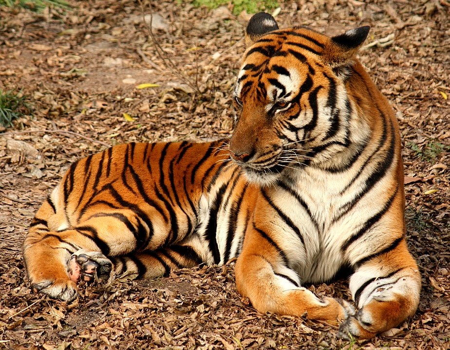

General Information Regarding the Tiger
The tiger (Panthera tigris) is the largest living cat species and a member of the genus Panthera.It is most recognisable for its dark vertical stripes on orange fur with a white underside. An apex predator, it primarily preys on ungulates, such as deer and wild boar. It is territorial and generally a solitary but social predator, requiring large contiguous areas of habitat to support its requirements for prey and rearing of its offspring. Tiger cubs stay with their mother for about two years and then become independent, leaving their mother's home range to establish their own.
The tiger is among the most recognisable and popular of the world's charismatic megafauna. It featured prominently in the ancient mythology and folklore of cultures throughout its historic range and continues to be depicted in modern films and literature, many flags, coats of arms and as mascots for sporting teams. The tiger is the national animal of India, Bangladesh, Malaysia and South Korea.
Etimology
The Middle English tigre and Old English tigras derive from Old French tigre, from Latin tigris. This was a borrowing of Classical Greek τίγρις 'tigris', a foreign borrowing of unknown origin meaning 'tiger' and the river Tigris. The origin may have been the Persian word tigra ('pointed or sharp') and the Avestan word tigrhi ('arrow'), perhaps referring to the speed of the tiger's leap, although these words are not known to have any meanings associated with tigers.
Taxonomy
In 1758, Carl Linnaeus described the tiger in his work Systema Naturae and gave it the scientific name Felis tigris. In 1929, the British taxonomist Reginald Innes Pocock subordinated the species under the genus Panthera using the scientific name Panthera tigris.
Table of Types of Tigris
| Population | Description | Image |
|---|---|---|
| Bengal Tiger |
Illiger's description was not based on a particular specimen, but he only assumed that tigers in the Caspian area differ from those elsewhere. It was later described as having narrow and closely set stripes. The size of its skull did not differ significantly from that of the Bengal tiger. According to genetic analysis, it was closely related to the Siberian tiger. It had been recorded in the wild until the early 1970s and is considered extinct since the late 20th century. |
 |
| Siberian Tiger |
Temminck's description was based on an unspecified number of tiger skins with long hairs and dense coats that were traded between Korea and Japan. He assumed they originated in the Altai Mountains. The Siberian tiger was later described as having pale coats with few dark brown stripes. |
 |
| South China Tiger |
Hilzheimer's description was based on five tiger skulls purchased in Hankou, southern China. These skulls differed in the size of teeth and jaw bones by a few cm from skulls of tigers from India. Skins of tigers from southern China in the fur trade were said to be vivid orange in colour with rhombus-like stripes. Because of differences in the shape of skulls, it was long thought to constitute the most ancient variety. It was noted to have a unique mtDNA haplotype. |
 |
Evolution
The tiger's closest living relatives were previously thought to be the Panthera species lion, leopard and jaguar. Results of genetic analysis indicate that about 2.88 million years ago, the tiger and the snow leopard lineages diverged from the other Panthera species, and that both may be more closely related to each other than to the lion, leopard and jaguar. The geographic origin of the Panthera is most likely northern Central Asia. The tiger-snow leopard lineage dispersed in Southeast Asia during the Miocene.
The sound of a tiger
Another Topics Regarding Tigers are:
- Evolution
- Hybrids
- Colour Varations
- Distribution and habitat
- Ecology and behavior
- Hunting and diet